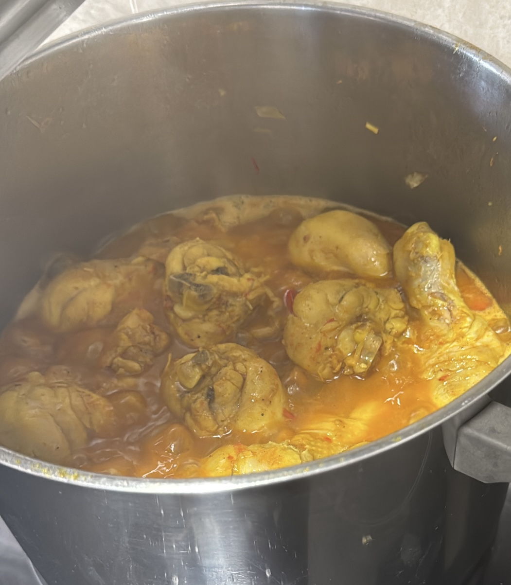

Home
Saucy Chicken

Description
This recipe is possibly the easiest and surely my favorite of the three. It takes around 1 hour to make
Ingredients
- 2 tomatoes
- 2 onions
- 2 peppers
- 4 garlic cloves
- 1 spoon of paprika
- 1 teaspoon of black pepper
- Salt
- 1 teaspoon of colorant or saffron
- 1/2 a glass of white wine
- 12 to 16 chicken drumsticks
Steps
- Chop all vegetables and fill the bottom of the pot with oil
- Throw in the pot all vegetables and stir-fry
- Add white wine, spices, and chicken drumsticks to the pot
- Optionally, add water to the pot
- Cook for at least 40 minutes and stir every once in a while